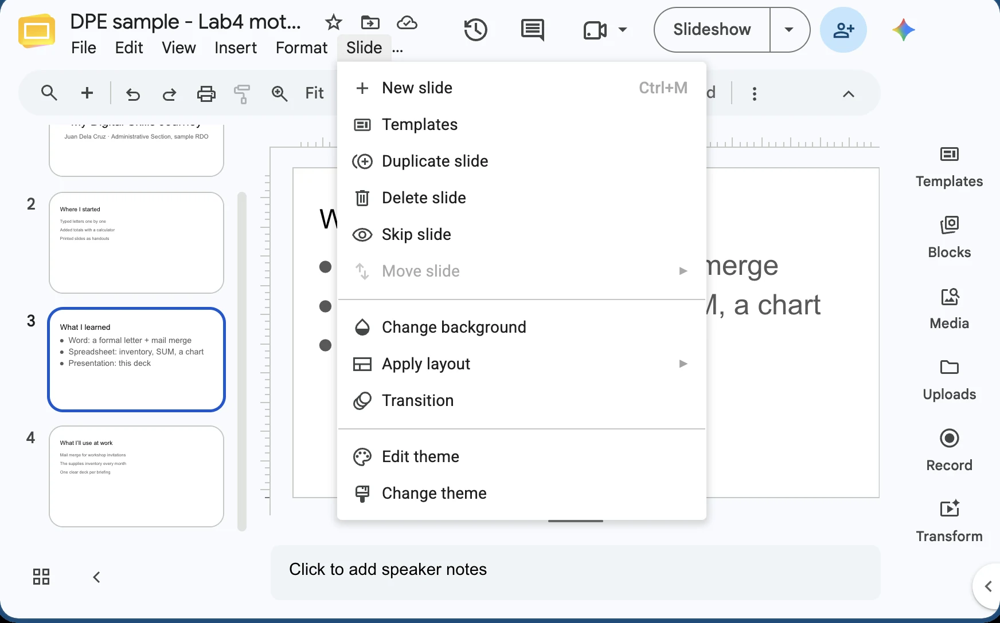
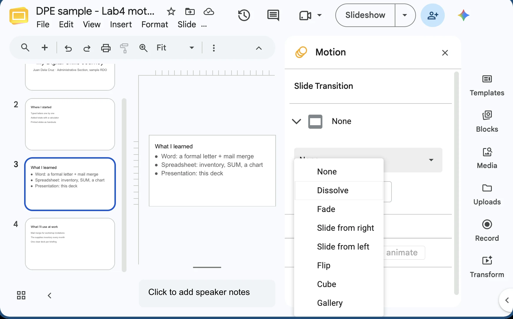
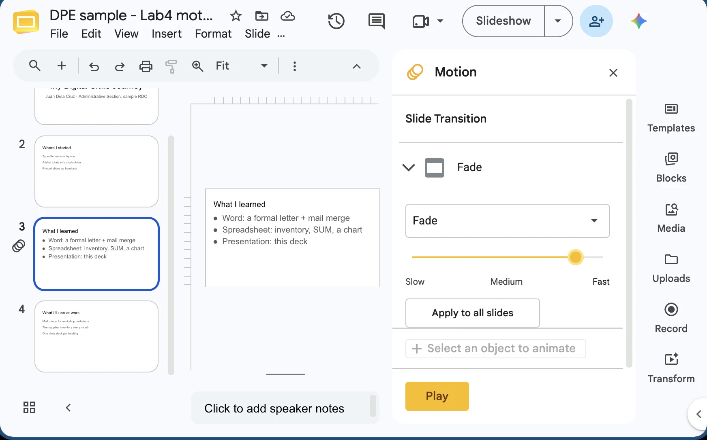
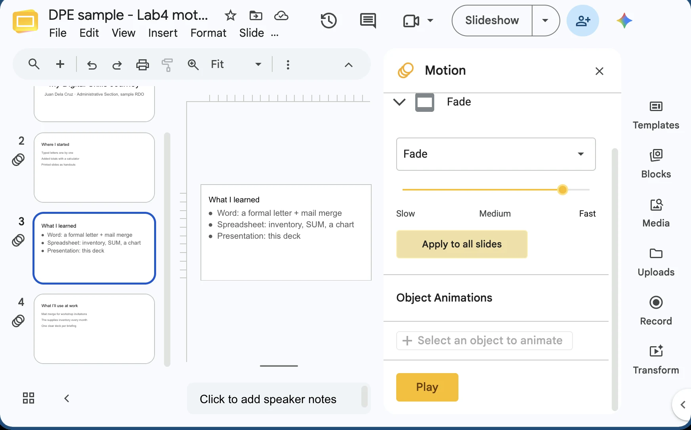

Module 4 · Multimedia Presentation Fundamentals
Applying Animations and Slide Transitions
Motion that helps your audience follow you


4.5
Digital Productivity Essentials · 4.5 Applying Animations and Slide Transitions
The big idea
Think of your deck as a flipbook
📖
Each page
is a slide
↪️
Turning the page
is a transition: a soft fade, a push
✏️
The drawing that moves
is an animation: a bullet appearing
Digital Productivity Essentials · 4.5 Applying Animations and Slide Transitions
Between slides, or on a slide?
Transitions vs animations
🔄
Transition
Between slides · Transitions tab
FadePushWipe
✨
Animation
On one slide · Animations tab
AppearFadeWipe
Save for parties: Vortex, Origami, Bounce, Spin, and any sound effect.
Digital Productivity Essentials · 4.5 Applying Animations and Slide Transitions
Try it · your Lab 4 file
One transition, Apply To All




Google Slides · PowerPoint: Transitions tab · sample file
Digital Productivity Essentials · 4.5 Applying Animations and Slide Transitions
Animations
Enter, emphasize, exit
🟢
Entrance
The object arrives when you're ready
🟡
Emphasis
It pulses: "look here!"
🔴
Exit
It leaves. Rarely needed.
Motion Paths exist too. Fun, but you won't need them for Lab 4.
Digital Productivity Essentials · 4.5 Applying Animations and Slide Transitions
Animate a list
One bullet per click


Google Slides · PowerPoint: Animations tab · sample file
Digital Productivity Essentials · 4.5 Applying Animations and Slide Transitions
Timing
Start, Duration and Delay
On Click
Waits for you. Best for anything you explain.
With Previous
Plays together with the item before
After Previous
Plays right after the item before ends
Duration
About 0.5 s feels smooth; 2 s feels slow
Digital Productivity Essentials · 4.5 Applying Animations and Slide Transitions
Your control room
Check the order in the Animation Pane


Google Slides Motion panel · PowerPoint: Animation Pane · sample file
Digital Productivity Essentials · 4.5 Applying Animations and Slide Transitions
Use motion with a purpose
When a little motion really helps
🏢
At the office
- Monthly report: three findings, one per click
- New staff orientation: Fade, nothing else
🏠
At home
- Lola's 80th: Fade, automatic, looping
- Kids' report: one bullet per click
Digital Productivity Essentials · 4.5 Applying Animations and Slide Transitions
Less is more
Motion should never be the star
1
One transition for the whole deck
2
One or two animation types
3
About 0.5 to 1 second each
4
No sound effects: online they're loud, late or cut off
Digital Productivity Essentials · 4.5 Applying Animations and Slide Transitions
Quick check
You want your three bullets to show up one per click. What do you use?
AA Push transition on that slide
BEntrance animation, By Paragraph, On Click
CAn exit animation on the text box
DMorph on the next slide
A transition changes the whole slide. Bullets live on the page.
Digital Productivity Essentials · 4.5 Applying Animations and Slide Transitions
Recap · Topic 4.5
Turn every page the same way. Move only what matters.
Transitions
One subtle effect, Apply To All
Animations
Entrance, By Paragraph, On Click
Control
0.5 to 1 s, Animation Pane, no sound
Next · 4.6 Adding Media Clips
Your Lab 4 slides already have text,
pictures and the Lab 3 chart.
Now let's add motion.
A little motion helps people follow you.
Too much makes them dizzy, like riding the Ferris wheel
at the perya for a whole report. Let's find the middle.
Think of your deck as a flipbook. Each page is a slide.
How you turn the page is the transition: a soft fade, or a push.
The drawing that moves on the page is the animation:
a bullet appearing, a chart wiping in.
Turn every page the same way, and move only what deserves attention.
Quick test: a transition happens when you move to the next slide.
An animation happens while you stay on the slide. For office work, stay subtle:
Fade, Push or Wipe for transitions,
and Appear, Fade or Wipe for animations.
Save the flashy ones, like Vortex, Origami and Spin, for a birthday slideshow.
Here's the Lab 4 requirement: one transition, applied uniformly.
Click any slide and open the Transitions tab.
Pick Fade or Push.
Set the duration to about half a second to one second, with no sound.
Then click Apply To All.
That's the step people miss.
Press F5 to test from the start.
Animations come in three types, shown as coloured stars in PowerPoint.
Entrance, in green, brings an object in when you're ready
to talk about it. Emphasis, in yellow, makes it pulse,
like the 22,039 peso total.
Exit, in red, takes it away,
and you'll rarely need it.
Most of the time, entrance is all you need.
Now make bullets appear one per click. Click the border of the text box,
so the whole box is selected. On the Animations tab, choose Appear or Fade.
Under Effect Options, pick By Paragraph,
and set Start to On Click. Now the formal letter comes first,
then the spreadsheet, then this deck,
each on its own click.
Three timing settings sit on the right of the Animations tab.
Start On Click waits for you:
best for anything you explain.
With Previous plays together with the item before,
like a chart and its label. After Previous plays right after it ends.
Duration is how long it takes:
half a second feels smooth, two seconds feels slow.
When a slide has more than two effects, open your control room:
Animations, Animation Pane.
It lists every effect in the order it plays.
Drag an item, or use the arrows, to re-order it.
Added one by accident?
Select it and press Delete.
Then press Shift F5 to test just this slide.
At the office, reveal three findings of a monthly report
one per click, so the team discusses each one.
An orientation for new staff needs only Fade between slides.
At home, Lola's 80th birthday slideshow can loop on the
TV with Fade and automatic timing.
And your child can practise speaking with one bullet per click.
Here's the rule of thumb. Use one transition for the whole deck.
One or two animation types.
About half a second to one second each. And no sound effects:
over Zoom or Meet they can be loud,
delayed, or cut off entirely.
Your content and your voice should be the star,
not the motion.
Quick check. You want three bullets to show up one per click.
Do you use a Push transition, an entrance animation by paragraph on click,
an exit animation, or Morph?
Think about it for a moment. The answer:
an entrance animation, By Paragraph, On Click.
A transition turns the whole page, and bullets live on the page.
To recap.
Transitions between slides:
one subtle effect, applied to all.
Animations on a slide:
entrance effects, one bullet per click.
And keep it quick, checked in the Animation Pane,
with no sound effects.
Next, in topic 4.6, we'll add video,
music and your own voice.